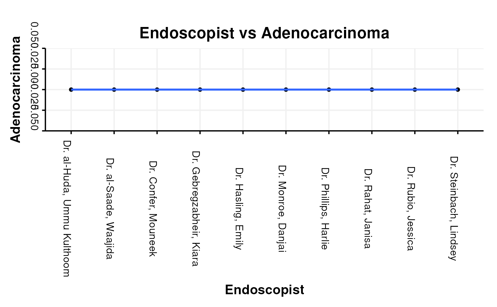

##Pathology Detection Quality
###Polyp and sample location
A difficult area is the assessment of endoscopic quality by looking at the pathology processed from an endoscopy. This package is excellent at dealing with this kind of question because of its ability to merge the datasets together:
A particularly well developed area to look at is that of the Global Rating Scale for assessing the quality of colonoscopy. One of the metrics- the adenoma detection rate assesses the number of colonoscopies where at least one adenoma was detected.
One function is provided to produce a table that gives the number of adenomas, adenocarcinomas and hyperplastic polyps (also as a ration to adenomas) by endoscopist therefore immediately fulfilling the GRS requirement for the ADR as well as providing further metrics alongside.
Having made sure the text is prepared (using the textPrep function) and merged with Pathology reports (which have also been textPrep’d) we can go straight ahead and use the function GRS_Type_Assess_By_Unit on one of our example datasets called vColon (the format of the dataset can be seen in the Data vignette. Here we will use the columns “ProcedurePerformed”,“Endoscopist”, “Diagnosis” and “Histology” to calculate the adenoma detection rate, as well as the rate of detection of adenocarcinoma, high grade dysplasia, low grade dysplasia, serrated adenomas and hyperplastic adenomas.
data(vColon)
nn<-GRS_Type_Assess_By_Unit(
vColon, "ProcedurePerformed",
"Endoscopist", "Diagnosis", "Histology")| Endoscopist | Adenoma | Adenocarcinoma | HGD | LGD | Serrated |
|---|---|---|---|---|---|
| Dr. Confer, Mouneek | 0 | 0 | 0 | 0 | 0 |
| Dr. Gebregzabheir, Kiara | 0 | 0 | 0 | 0 | 0 |
| Dr. Hasling, Emily | 0 | 0 | 0 | 0 | 0 |
| Dr. Monroe, Danjai | 0 | 0 | 0 | 0 | 0 |
| Dr. Phillips, Harlie | 0 | 0 | 0 | 0 | 0 |
| Dr. Rahat, Janisa | 0 | 0 | 0 | 0 | 0 |
| Dr. Rubio, Jessica | 0 | 0 | 0 | 0 | 0 |
| Dr. Steinbach, Lindsey | 0 | 0 | 0 | 0 | 0 |
| Dr. al-Huda, Ummu Kulthoom | 0 | 0 | 0 | 0 | 0 |
| Dr. al-Saade, Waajida | 0 | 0 | 0 | 0 | 0 |
| Hyperplastic | n |
|---|---|
| 0 | 217 |
| 0 | 190 |
| 0 | 220 |
| 0 | 232 |
| 0 | 235 |
| 0 | 218 |
| 0 | 181 |
| 0 | 191 |
| 0 | 204 |
| 0 | 217 |
This of course can then be graphed using the pre-formatted function EndoBasicGraph
EndoBasicGraph(nn, "Endoscopist", "Adenocarcinoma")